건축산업기사 (2009-07-26 기출문제)
1과목: 건축계획
1. 오피스 랜드스케이프(office landscape)에 관한 설명 중 옳지 않은 것은?
- 커뮤니케이션의 융통성이 있다.
- 개방식 배치의 한 형식이다.
- 소음 발생에 대한 고려가 요구된다.
- 독립성과 쾌적감의 이점이 있다.
(정답률: 86%)

2. 사무소 건축의 화장실 계획에 대한 설명 중 옳지 않은 것은?
- 계단실, 엘리베이터 홀에 근접할 것
- 각 층마다 공통의 위치에 둘 것
- 가능한 중정 또는 외기에 접할 것
- 사무실 출입문과 화장실 출입문이 서로 마주보도록 배치할 것
(정답률: 80%)
3. 주거공간을 주행동에 따라 개인공간, 작업공간, 사회적 공간으로 구분할 경우, 다음 중 작업공간에 해당하는 것은?
- 화장실
- 서재
- 다용도실
- 현관
(정답률: 76%)
4. 공장건축의 형식 중 파빌리온 타입에 대한 설명으로 옳지 않은 것은?
- 통풍, 채광이 좋다.
- 공장의 신설, 확정이 비교적 용이하다.
- 건축형식, 구조를 각기 다르게 할 수 없다.
- 각 동의 건설을 병행할 수 있으므로 조기완성이 가능하다.
(정답률: 85%)
5. 주택의 동선계획에 관한 설명 중 옳지 않은 것은?
- 동선의 형(型)은 될 수 있는 한 단순하게 한다.
- 거실은 통로로서 사용되지 않도록 하는 것이 좋다.
- 가사노동의 동선은 되도록 남쪽에 오도록 하고, 짧게 한다.
- 다른 종류의 동선과는 서로 근접교차시켜 동선간의 이동이 원활하게 한다.
(정답률: 79%)
6. 다음 중 아파트의 성립(成立)요소가 아닌 것은?
- 도시 생활자의 이동성
- 부지비, 건축비 등의 절약
- 세대 인원의 증가
- 도시 인구 밀도의 증가
(정답률: 50%)
7. 다음 중 고층 사무소 건축에서 층고를 낮게 하는 이유와 가장 관계가 먼 것은?
- 공사비를 낮춘다.
- 보다 넓은 설비공간을 얻는다.
- 실내의 공기조화 효율을 높인다.
- 제한된 건물 높이에서 가급적 많은 수의 층을 얻는다.
(정답률: 73%)
8. 상정의 진열장(show case)배치시 고려 사항으로 옳지 않은 것은?
- 상정에 들어오는 손님과 종업원의 시선이 직접 마주치도록 한다.
- 손님쪽에서 상품이 효과적으로 보이도록 한다.
- 감시하기 쉬우나 손님에게는 감시한다는 인상을 주지 않도록 한다.
- 소소의 종업원으로 다수의 손님을 관리하기에 편리하도록 한다.
(정답률: 89%)
9. 상정의 대지선정조건과 가장 거리가 먼 것은?
- 교통이 편리한 곳
- 사람의 눈에 잘 뜨이는 곳
- 2면 이상 도로에 면한 곳
- 부지가 불규칙적이고 구석진 곳
(정답률: 96%)
10. 초등학교 교실배치에 관한 설명 중 옳지 않은 것은?
- 저학년은 되도록 1층에 두도록 한다.
- 1,2학년은 출입구를 따로 만들어 주는 것이 좋다.
- 동 학년의 교실은 집약배치 한다.
- 저학년에서 평면형은 주위에 개방되어 일렬로 나란히 잇댄 것이 가장 이상적이다.
(정답률: 62%)
11. 다음 중 초등학교 저학년에 가장 적당한 학교운영방식은?
- 일반교실, 특별교실형(U+V형)
- 교과교실형(V형)
- 종합교실형(U형)
- 플래툰형(P형)
(정답률: 81%)
12. 학교시설의 강당 및 실내체육관 계획에 대한 설명 중 옳지 않은 것은?
- 강당 겸 체육관인 겨우 커뮤니티 시설로서 이용될 수 있도록 고려하여야 한다.
- 실내체육관의 크기는 농구코트를 기준으로 한다.
- 강당 겸 체육관인 경우 강당으로서의 목적에 치중하여 계획하는 것이 바람직히다.
- 강당의 크기는 반드시 전원을 수용할 수 있도록 할 필요는 없다.
(정답률: 81%)
13. 다음 중 방적공장을 무창공장으로 설계하는 이유와 가장 거리가 먼 것은?
- 온ㆍ습도 조정의 유지비가 싸다.
- 조도를 일정하게 하는데 유리하다.
- 유창공장에 비하여 건설비가 싸다.
- 공장내의 소음을 저하시킨다.
(정답률: 90%)
14. 공동주택의 단면형 중 스킵 플로어(skip floor)형식에 대한 설명으로 옳은 것은?
- 주거단위가 동일층에 한하여 구성되는 형식이며, 각 층에 통로, 또는 엘리베이터를 설치하게 된다.
- 주거단위의 단면을 단층형과 복층형에서 동일층으로 하지 않고 반 층씩 멋나게 하는 형식을 말한다.
- 하나의 단위주거의 평면이 2개 츠에 걸쳐 있는 것으로 듀플렉스형이라고도 한다.
- 하나의 단위주거의 평면이 3개 층에 걸쳐 있는 것으로 트리플렉스형이라고도 한다.
(정답률: 69%)
15. 사무소 건축에서 렌터블비란 무엇인가?
- 업무공간의 공용공간의 비
- 임대면적의 연면적의 비
- 건축면적과 대지면적의 비
- 연면적과 대지면적의 비
(정답률: 79%)
16. 다음 중 상점 내 진열장 배치계획에서 가장 우선적으로 고려되어야 할 사항은?
- 동선의 흐름
- 진열장의 치수
- 조명의 밝기
- 천장의 높이
(정답률: 90%)
17. 경사지를 적절히 이용할 수 있으며, 각호마다 전용의 정원을 갖는 주택형식은?
- 타운 하우스(town house)
- 로우 하우스(row house)
- 테라스 하우스(terrace house)
- 파티오 하우스(patio house)
(정답률: 88%)
18. 숑바르 드 로브(chombard de Lauw)의 병리기준에 해당되는 1인당 주거면적은?
- 8m2
- 10m2
- 14m2
- 16.5m2
(정답률: 86%)
19. 상점 내부의 기본조명에 필요한 조명기구수를 구하는데 관계없는 사항은?
- 평균조도
- 실면적
- 쇼케이스 수
- 램프광속
(정답률: 73%)
20. 주택의 부엌 계획에 대한 설명 중 옳지 않은 것은?
- 작업위 순서는 일반적으로 준비대→싱크대→조리대→가스렌지→배선대의 순으로 진행된다.
- U자형 부엌은 통상 가스렌지를 가운데 두고 싱크대와 냉장고를 마주보게 배치한다.
- 저장, 준비, 조리공간을 잇는 work triangle의 세 변의 길이가 너무 길어지면 작업능률이 저하된다.
- 일렬형 부엌은 싱크대, 조리대, 가스렌지 등의 작업대를 일렬로 한 벽면에 배치한 형태이다.
(정답률: 74%)
2과목: 건축시공
21. 108mm규격의 정사각형 타일을 줄눈폭 6mm로 붙일 때 1m2당 타일 매수로 옳은 것은?
- 72매
- 73매
- 75매
- 77매
(정답률: 70%)
22. 벤치마크(Bench mark)에 관한 설명 중 옳지 않은 것은?
- 이동의 염려가 없어야 한다.
- 하나의 대지에 2개 이상 설치하지 않아야 한다.
- 공사 완료시까지 존치되어야 한다.
- 공사 착수 전에 설정되어야 한다.
(정답률: 78%)
23. 다음 중 콘크리트 배합시 시공연도와 가장 관계가 적은 것은?
- 단위시멘트량
- 골재의 입도
- 혼화재료
- 시멘트 강도
(정답률: 66%)
24. 콘크리트를 제조하는 자동설비로써, 재료의 저장설비, 계량설비, 혼합설비 등으로 구성되어 있는 기계는?
- 강제식 믹서
- 플라이애시 사일로
- 배쳐플랜트
- 슬럼프 모니터
(정답률: 68%)
25. 목공사에 관한 설명 중 옳지 않은 것은?
- 이음과 맞춤의 단면은 응력의 방향과 일치시킨다.
- 맞춤면은 정확히 가공하여 상호간 밀착하고 빈틈이 없도록 한다.
- 못의 길이는 널두께의 2.5~3배 정도로 한다.
- 이음과 맞춤은 응력이 작은 곳에 만드는 것이 좋다.
(정답률: 54%)
26. 칠 공사에서 스프레이 건(Spray gun)사용시 주의사항으로 옳지 않은 것은?
- 뿜칠 폭의 1/3~1/2 정도가 서로 겹치도록 뿜칠한다.
- 스프레이 건의 운행은 원호 곡선으로 이동하도록 한다.
- 칠바탕의 뿜칠거리는 보통 30cm정도로 한다.
- 뿜칠의 각도는 칠바탕의 직각으로 한다.
(정답률: 73%)
27. 슬럼프 콘에 있어서 슬럼프 시험의 결과가 다음 그림과 같이 되었다면 슬럼프 값은?
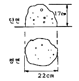
- 8cm
- 13cm
- 17cm
- 22cm
(정답률: 69%)
28. 다음 중 연약한 점성토 지반에 주상의 투수츠인 모래말뚝을 다수 설치하여 그 토층 속의 수분을 배수하여 지반의 압밀강화를 도모하는 공법은?
- 샌드 드레인 공법
- 웰 포인트 공법
- 바이브로 콤포저 공법
- 시멘트 주입 공법
(정답률: 83%)
29. 고강도 콘크리트의 설계기준강도는 보통콘크리트에서 최소 얼마 이상인가?
- 27MPa
- 30MPa
- 35MPa
- 40MPa
(정답률: 64%)
30. 커튼웰을 외관형태로 분류할 때 그 종류에 해당되지 않는 것은?
- 샛기둥 방식(mullion type)
- 스팬드럴 방식(spandrel type)
- 격자 방식(grid type)
- 슬라이드 방식(slide type)
(정답률: 58%)
31. 철근콘크리트 블록조에서 내력벽 상부에 테두리보를 설치하는 가장 큰 이유는?
- 분산된 벽체를 일체화하기 위해서
- 내력벽의 상부 마무리를 깨끗이 하기 위해서
- 벽에 개구부를 설치하기 위해서
- 철근의 배근을 용이하게 하기 위해서
(정답률: 75%)
32. 다음 ( )에 들어갈 수치로 알맞게 짝지어진 것은?
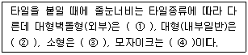
- ① 15mm, ② 10~12mm, ③ 6mm, ④ 3mm
- ① 12mm, ② 5~9mm, ③ 6mm, ④ 3mm
- ① 9mm, ② 5~6mm, ③ 3mm, ④ 2mm
- ① 6mm, ② 4mm, ③ 3mm, ④ 2mm
(정답률: 64%)
33. 건축연면적(m2)당 먹매김의 폼 가장 많이 소요되는 건축물은?
- 고급주택
- 학교
- 사무소
- 공장
(정답률: 81%)
34. 다음 중 평판 측량용 기구가 아닌 것은?
- 엘리데이드
- 자침기
- 구심기
- 스타디아
(정답률: 70%)
35. 다음 중 캐스트 스톤(cast stone)을 의미하는 것은?
- 인조석 잔다듬
- 인조석 씻어내기
- 백시멘트 뿜칠마감
- 회사벽 마무리
(정답률: 59%)
36. 현장타설 콘크리트말뚝공법 중 리버스서큘레이션(Reverse Circulation Drill)공법에 대한 설명으로 옳지 않은 것은?
- 유연한 지반부터 암반까지 굴착 가능하다.
- 시공심도는 통상 70m까지 가능하다.
- 굴착에 있어 안정액으로 벤토나이트 용액을 사용한다.
- 시공직경은 0.9~3m 정도이다.
(정답률: 76%)
37. 다음 중 목재의 이음 및 맞춤에 관한 용어가 거리가 먼 것은?
- 주먹장
- 연귀
- 모접기
- 장부
(정답률: 69%)
38. 다음 철골 공사용 기계 기구 중 그 사용요도가 나머지 셋과 다른 것은?
- 리머(Reamer)
- 펀칭해머(Punching Hammer)
- 드릴(Drill)
- 토크렌치(Torque wrench)
(정답률: 73%)
39. 대형 판유리를 사용하여 유리만으로 벽면을 구성하는 공법은?
- 퍼티 고정 공법
- 실링 공법
- 개스킷 고정 공법
- 서스팬션 공법
(정답률: 72%)
40. 석재의 표면 마무리 방법 중 정다듬에 속하지 않는 것은?
- 거친다듬
- 중다듬
- 잔다듬
- 고운다듬
(정답률: 59%)
3과목: 건축구조
41. 그림과 같은 도형의 X축에 대한 단면2차 모멘트는? (단, G는 도형의 도심)
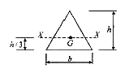
- bh3 / 2
- bh3 / 18
- bh3 / 24
- bh3 / 36
(정답률: 60%)
42. 그림과 같은 트러스에 대한 설명 중 옳지 않은 것은?(오류 신고가 접수된 문제입니다. 반드시 정답과 해설을 확인하시기 바랍니다.)
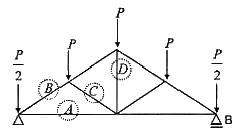
- A부재는 인장재이다.
- B부재는 압축재이다.
- C부재는 인장재이다.
- D부재는 영부재이다.
(정답률: 58%)
43. 다음 단순보형 라멘에 대한 휨모멘트의 대략적인 그림으로 옳은 것은?
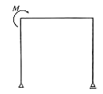
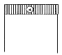
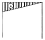
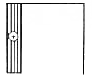
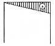
(정답률: 74%)
44. 그림과 같은 막대가 인장력을 받는 경우 수직변형률을 옳게 나타낸 것은?
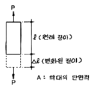
- l / △l
- △l / l
- P / A
- Pl / A△l
(정답률: 68%)
45. 특정 재료의 푸와송비(poisson‘s ratio)가 0.25일 때 푸와송수(poisson’s number)는 얼마인가?
- 0.5
- 1
- 2
- 4
(정답률: 19%)
46. 강도설계법에 의한 철근콘크리트 보의 전단설계에서 상세한 계산을 하지 않는 겨우 그림과 같은 보의 콘크리트에 의한 공칭전단강도 Vc는? (단, fck=24MPa)
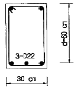
- 127kN
- 147kN
- 168kN
- 188kN
(정답률: 57%)
47. 중심하중 500kN, 휨모멘트 100kNㆍm을 받는 기초 저면에 인장력이 생기지 않기 위한 기초의 최소너비값은?
- 100cm 이상
- 120cm 이상
- 140cm 이상
- 160cm 이상
(정답률: 47%)
48. 그림의 단면에서 X축에 대한 단면 2차 모멘트는?
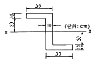
- 106,667cm4
- 180,000cm4
- 433,333cm4
- 540,000cm4
(정답률: 58%)
49. 강도설계법에서 보통콘크리트와 설계기준항복강도 400MPa 철근을 사용한 양단 연속 1방향 슬래브의 스팬이 4.2m 일 때 처짐을 계산하지 않는 경우 최소 두께로 옳은 것은?
- 12cm
- 13cm
- 14cm
- 15cm
(정답률: 39%)
50. 프리스트레스트 구조의 프리텐션(pre-tension)공법에 사용되는 것과 거리가 먼 것은?
- PC강재
- 정착대
- 잭(jack)
- 쉬스(sheath)
(정답률: 61%)
51. 강도설계법에서 그림과 같은 단면을 가지는 단근보의 설계모멘트(øMn)는? (단, fck=27MPa, fy=400MPa, As=2871mm2, 강도감소계수는 0.85임)
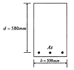
- 381.33kNㆍm
- 484.75kNㆍm
- 569.64kNㆍm
- 715.66kNㆍm
(정답률: 43%)
52. 강도설계법에 의한 철근콘크리트 부재 설계에 대한 설명으로 옳지 않는 것은?
- 서로 다른 하중의 특성을 설계에 반영할 수 있다.
- 부재강도의 계산에서는 재료의 탄성범위에 한해서 응력도-변형률 관계를 고려한다.
- 보의 압축응력ㆍ분포도는 직사각형, 사다리꼴 또는 포물선 등으로 가정할 수 있다.
- 콘크리트와 철근의 변형률은 중립축으로부터의 거리에 비례하며 압축연단에서 콘크리트의 최대변형률은 0.003이다.
(정답률: 14%)
53. 철근콘크리트 구조로도 이용되는 H.P쉘(hyperbolic paraboloid shell)에 관한 설명으로 옳지 않은 것은?
- 면내에는 인장응력이 발생하지 않는다.
- 쌍곡포물선면으로 된 쉘이다.
- 면내 전달력에 의하여 하중을 주변 지지체에 전달할 수 있다.
- H.P곡면을 몇 개의 단위로 짜 맞추면 여러 종류의 지붕 형태를 구성할 수 있다.
(정답률: 54%)
54. 보통콘크리트에 D19 철근이 사용될 때 인장철근의 기본 장착길이는 약 얼마인가? (단, fck=27MPa, fy=300MPa)
- 290mm
- 330mm
- 660mm
- 820mm
(정답률: 53%)
55. 강도설계법에서 다음 그림의 컨틸레버 기둥에 대한 유효길이 계수는?
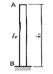
- 0.5
- 1.0
- 2.0
- ∞(무한대)
(정답률: 80%)
56. 다음 그림은 단순보의 임의점에 집중 하중 1개가 작용하였을 때의 전단력도를 나타낸 것이다. C점의 휨모멘트는 얼마인가?
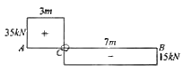
- 0
- 1⑤kNㆍm
- 210kNㆍm
- 245kNㆍm
(정답률: 67%)
57. 강도설계법에 의한 철근콘크리트의 보설계시 최대철근비 개념을 두는 가장 큰 이유는?
- 경제적인 설계가 되도록 하기 위해
- 취성파괴를 유도하기 위해
- 연성파괴를 유도하기 위해
- 구조적인 효율을 높이기 위해
(정답률: 69%)
58. 그림과 같은 T형보의 유효폭 B의 값은? (단, 보의 스팬은 15m이다.)
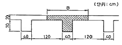
- 375cm
- 360cm
- 210cm
- 160cm
(정답률: 64%)
59. 철근콘크리트보에서 헌치(haunch)를 설치하는 이유에 관한 설명으로 가장 적당한 것은?
- 보의 중앙부 전단파괴를 방지하기 위하여
- 보의 단부에서 휨모멘트 내력과 전단내력을 증가시키기 위하여
- 보의 휨좌굴 방지를 위하여
- 보가 기둥을 고장하는 효과를 높여서 기둥의 안전성을 확보하기 위하여
(정답률: 40%)
60. 그림과 같은 구조물에서 A점에 발생하는 모멘트는?
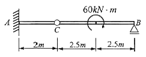
- 24kNㆍm
- 28kNㆍm
- 30kNㆍm
- 32kNㆍm
(정답률: 36%)
4과목: 건축설비
61. 대변기의 세정방식 중 바닥으로부터 1.6m 이상 높은 위치에 탱크를 설치하고, 볼 탭을 통하여 공급된 일정량의 물을 저장하고 있다가 핸들 또는 레버의 조작에 의해 낙차에 의한 수압으로 대변기를 세척하는 방식은?
- 하이 탱크식
- 로 탱크식
- 플러스 밸브식
- 사이폰 제트식
(정답률: 60%)
62. 10kW 전열기의 발열량으로 옳은 것은?
- 8,600 KJ/h
- 25,000 KJ/h
- 36,000 KJ/h
- 44,000 KJ/h
(정답률: 52%)
63. 다음 중 옥내배선에서 간선의 굵기 결정요소와 가장 관계가 먼 것은?
- 허용전류
- 기계적 강도
- 전압강하
- 배선방식
(정답률: 71%)
64. 형광등에 대한 설명으로 옳지 않은 것은?
- 백연전구보다 효율이 높다.
- 형광물질을 바꾸면 원하는 광색을 얻을 수 있다.
- 백열전구에 비해 수명이 길다.
- 빛의 아른거림이 없으며 열발산이 백열전구보다 많다.
(정답률: 80%)
65. 비상콘센트 설비에 대한 설명 중 틀린 것은?
- 5층 이상의 건물에 층마다 한 개씩 설치하여야 한다.
- 지하가 중 터널로서 길이가 500m 이상인 경우 비상콘센트 설비를 설치하여야 한다.
- 전원회로는 각 층에 있어서 2 이상이 되도록 설치하는 것이 원칙이다.
- 콘센트마다 배선용 차단기를 설치한다.
(정답률: 66%)
66. 보일러의 설계부하 계산에서 급탕량이 500L/h 일 때 급탕부하는? (단, 급탕온도는 60℃, 급수온도는 0℃를 기준으로 한다.)
- 125,700 KJ/h
- 146,000 KJ/h
- 167,600 KJ/h
- 188,500 KJ/h
(정답률: 38%)
67. 다음 중 버큠 브레이커나 역류 방지기능을 가지는 것을 설치할 필요가 있는 위생기구는?
- 세면기
- 욕조
- 대변기(세정밸브형)
- 소변기(세정탱크형)
(정답률: 80%)
68. 자동식 소화기를 설치하여야 하는 특정소방대상물은?
- 아파트
- 단독주택
- 도매시장
- 일반음식점
(정답률: 70%)
69. 다음 중 증기 트랩의 설치 목적과 가장 거리가 먼 것은?
- 배관내의 응축수 제거
- 배관내의 공기 제거
- 배관내의 모래 등 잡물 제거
- 배관내의 불응축성 기체 제거
(정답률: 68%)
70. 다음과 같은 순환 펌프의 축동력은 약 몇 kW인가? (단, 수량 Q = 300 L/min, 전양정 = 10m, 펌프효율 = 55%)
- 0.89
- 1.23
- 6.82
- 0.27
(정답률: 59%)
71. 너무 큰 신축에는 파손되어 누수의 원인이 되는 결점은 있으나 현장에서 2개 이상의 엘보를 사용하여 만들 수 있는 신축 이음쇠는?
- 루프형 신축 이음쇠
- 슬리브형 신축 이음쇠
- 스위블형 신축 이음쇠
- 벨로우즈형 신축 이음쇠
(정답률: 81%)
72. 원주 주위에 핀이 부착되어 있는 긴 형상을 가지고 있으며 온실과 같이 내식성을 요하고 설치높이에 제약이 있는 긴 건물에 설치하는 자연대류ㆍ복사식 방열기는?
- 유니트 히터
- 길드방열기
- 콘벡타
- 휀콘벡타
(정답률: 43%)
73. 냉방부하 계산시 현열과 잠열을 동시에 고려하여야 하는 부하의 종류에 속하지 않는 것은?
- 인체의 발생열
- 외기의 도입으로 인한 취득열
- 극간풍에 의한 취득열
- 벽체로부터의 취득열
(정답률: 50%)
74. 복사난방에 대한 설명 중 옳지 않은 것은?
- 쾌적감이 높다.
- 외기침입이 있는 곳에서도 난방감을 얻을 수 있다.
- 매립코일이 고장나면 수리가 어렵다.
- 열용량이 작기 때문에 간헐난방에 적합하다.
(정답률: 56%)
75. 온수난바에 대한 설명 중 옳지 않은 것은?
- 중력 순환식 온수난방에서 방열기는 보일러보다 높은 장소에 설치한다.
- 강제 순환식은 중력 순환식보다 관경이 작아도 된다.
- 고온수 방식에서는 개방식 팽창탱크를 사용하며 밀폐식 팽창탱크는 사용할 수 없다.
- 단관식 배관방식은 온수의 공급과 환수를 하나의 관으로 사용하고, 방열기의 공급과 환수관을 이 관에 연결하는 방식이다.
(정답률: 58%)
76. 두 사람이 거주하는 침실에서 CO2의 최대허용농도 0.2%, 외기 중의 CO2 농도 0.⑤%일 때 필요 환기량(Q)은? (단, 1인당 CO2 발생량은 15L/h이다.)
- 20 m3/h
- 25 m3/h
- 30 m3/h
- 40 m3/h
(정답률: 46%)
77. 화재를 진압하거나 인명구조활동을 위하여 사용하는 설비로서 제연설비, 연결송수관설비 등을 포함하는 것은?
- 소화설비
- 경보설비
- 소화활동설비
- 피난설비
(정답률: 83%)
78. 고층 건물의 급수 방식에 관한 설명 중 옳지 않은 것은?
- 중간수조를 이용한다.
- 감압밸브를 이용하여 수압을 조절한다.
- 수직높이 40~50m 정도마다 조닝한다.
- 부스터 펌프를 이용하여 한 계통으로 한다.
(정답률: 74%)
79. 통기수직관을 설치한 배수ㆍ통기계통에 이용되며, 2개 이상의 기구트랩에 공통으로 하나의 통기관을 설치하는 통기방식은?
- 각개통기방식
- 루프통기방식
- 신정통기방식
- 습통기방식
(정답률: 70%)
80. 일반적으로 지름이 큰 대형관에서 배관 조립이나 관의 교체를 손쉽게 할 목적으로 이용되는 이음은?
- 플랜지 이음
- 신축 이음
- 용접 이음
- 나사 이음
(정답률: 87%)
5과목: 건축관계법규
81. 다음과 같이 도로의 폭이 3m일 경우, 도로 중심선으로부터 건축선까지의 거리로 옳은 것은?
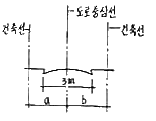
- a, b는 각각 1.2m
- a, b는 각각 1.5m
- a, b는 각각 2m
- a, b는 각각 3m
(정답률: 58%)
82. 다음 중 증축에 해당하지 않는 것은?
- 기존 건축물이 있는 대지에서 건축물의 건축면적을 늘리는 것
- 기존 건축물이 있는 대지에서 건축물의 연면적을 늘리는 것
- 기존 건축물이 있는 대지에서 건축물의 높이를 늘리는 것
- 기존 건축물이 있는 대지에서 건축물의 개구부 숫자를 늘리는 것
(정답률: 75%)
83. 다음의 건축물의 높이 제한에 관한 기준 내용 중 ( )안에 알맞은 것은?
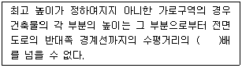
- 1.0
- 1.5
- 2.0
- 2.5
(정답률: 49%)
84. 다음 중 내화구조로 볼 수 없는 것은?
- 작은 지름이 25cm인 철근콘크리트조의 기둥
- 벽돌조로서 두께가 0.58인 내력벽
- 두께가 10cm인 철근콘크리트조의 바닥
- 철골조의 계단
(정답률: 48%)
85. 피뢰설비를 설치하여야 하는 건축물의 높이 기준은?
- 10m 이상
- 15m 이상
- 20m 이상
- 31m 이상
(정답률: 78%)
86. 건축법상 도로로 볼 수 있는 길이 10m인 막다른 도로의 최소 너비는?
- 2m
- 3m
- 4m
- 6m
(정답률: 68%)
87. 다음의 노외주차장의 구조 및 설비기준에 관한 설명 중 옳지 않은 것은?
- 건축물식 노외주차장의 경사로서 중단경사도는 곡선 부분에서 14%를 초과하여서는 아니된다.
- 자동차의 출입 및 도로교통의 안전을 확보하기 위하여 필요한 경보장치를 설치하여야 한다.
- 주차에 사용되는 부분의 높이는 주차바닥면으로부터 2.1m이상으로 하여야 한다.
- 자주식 주차장으로서 지하식 노외주차장에는 바닥으로부터 85cm 높이에 있는 지점이 평균 60룩스 이상의 조도를 유지할 수 있는 조명장치를 설치하여야 한다.
(정답률: 54%)
88. 주차대수가 300대 이하인 경우 시설물의 부지인근에 단독 또는 공동으로 부설주차장을 설치할 수 있는데, 시설물의 부지인근의 범위는 당해 부지의 경계선으로부터 부설주차장의 경계선까지 직선거리로 최대 얼마 이내를 말하는가?
- 50m
- 100m
- 300m
- 600m
(정답률: 59%)
89. 비상용승강기 승강장의 구조에 관한 기준 내용으로 틀린 것은?
- 승강장의 창문ㆍ출입구 기타 개구부를 제외한 부분은 당해 건축물의 다른 부분과 내화구조의 바닥 및 벽으로 구획할 것
- 벽 및 반자가 실내에 접하는 부분의 마감재료는 불연재료로 할 것
- 승강장은 피난층을 제외한 각 층의 내부와 연결될 수 있도록 하되, 그 출입구에는 을종방화문을 설치할 것
- 피난층이 있는 승강장의 출입구로부터 도로 또는 공지에 이르는 거리가 30m 이하일 것
(정답률: 76%)
90. 각 층의 거실면적이 850m2 이며 용도가 업무시설 중 오피스텔인 16층 건축물에 설치하여야 하는 승용승강기 최소 대수는? (단, 8인승 승강기인 경우)
- 3대
- 4대
- 5대
- 6대
(정답률: 42%)
91. 다음 중 노외 주차장에 설치하여야 하는 차로의 최소너비가 가장 작은 주차형식은? (단, 출입구가 2개 이상인 경우)
- 직각주차
- 60도 대향주차
- 교차주차
- 평행주차
(정답률: 76%)
92. 계단의 설치기준에 관한 내용 중 옳지 않은 것은?
- 높이가 3m를 넘는 계단에는 높이 3m 이내마다 너비 1.2m 이상의 계단창을 설치할 것
- 너비가 3m를 넘는 계단에는 계단의 중간에 너비 3m 이내마다 난간을 설치할 것
- 중학교의 계단인 경우 단높이는 18cm 이하로 할 것
- 고등학교의 계단인 경우 단높이는 20cm 이하로 할 것
(정답률: 54%)
93. 건축물의 대지에 공개공지 또는 공개공간을 확보하여야 하는 대상 건축물에 속하지 않는 것은?
- 연면적의 합계가 4천제곱미터인 판매시설
- 연면적의 합계가 5천제곱미터인 문화 및 집회시설
- 연면적의 합계가 6천제곱미터인 숙박시설
- 연면적의 합계가 5천제곱미터인 업무시설
(정답률: 69%)
94. 다음 중 부설주차장을 추가로 확보하지 아니하고 건축물의 용도를 변경할 수 있는 경우에 해당하는 것은? (단, 문화 및 집회시설중 공연장ㆍ집회장ㆍ관람장ㆍ위락시설 및 주택 중 다세대주택ㆍ다가구주택의 용도로 변경하는 경우를 제외)
- 사용승인 후 3년이 경과된 연면적 1,000m2 미만의 건축물의 용도를 변경하는 경우
- 사용승인 후 3년이 경과된 연면적 2,000m2 미만의 건축물의 용도를 변경하는 경우
- 사용승인 후 5년이 경과된 연면적 1,000m2 미만의 건축물의 용도를 변경하는 경우
- 사용승인 후 5년이 경과된 연면적 2,000m2 미만의 건축물의 용도를 변경하는 경우
(정답률: 67%)
95. 건축법상 용적률의 정의로 가장 알맞은 것은?
- 연면적에 대한 건축면적의 비율
- 대지면적에 대한 건축면적의 비율
- 대지면적에 대한 연면적의 비율
- 연면적에 대한 지상층 바닥면적의 비율
(정답률: 74%)
96. 시설면적이 900m2인 위락시설에 설치하여야 하는 부설주차장의 최소 대수는?
- 3대
- 5대
- 6대
- 9대
(정답률: 68%)
97. 건축물에 따른 용도의 연결이 옳지 않은 것은?
- 예식장 – 문화 및 집회시설
- 고시원 – 교육연구시설
- 다세대주택 – 공동주택
- 항만시설 – 운수시설
(정답률: 84%)
98. 다음 중 피난 용도로 쓸 수 있는 광장을 옥상에 설치하여야 하는 경우에 해당하지 않는 것은?
- 5층 이상인 층이 종교시설의 용도로 사용되는 경우
- 5층 이상인 층이 판매시설의 용도로 사용되는 경우
- 5층 이상인 층이 업무시설의 용도로 사용되는 경우
- 5층 이상인 층이 장례식장의 용도로 사용되는 경우
(정답률: 45%)
99. 주차장 주차단위구획의 크기 기준으로 옳은 것은? (단, 평행주차형식인 경우이며, 일반형)
- 너비 1.7m 이상, 길이 4.5m 이상
- 너비 2.0m 이상, 길이 6.0m 이상
- 너비 2.0m 이상, 길이 5.0m 이상
- 너비 2.3m 이상, 길이 5.0m 이상
(정답률: 66%)
100. 아파트의 신축공사시 골조공사에 건축폐자재를 사용했을 경우 용적률의 최대 완화 범위는?
- 100분의 110
- 100분의 115
- 100분의 120
- 100분의 125
(정답률: 35%)